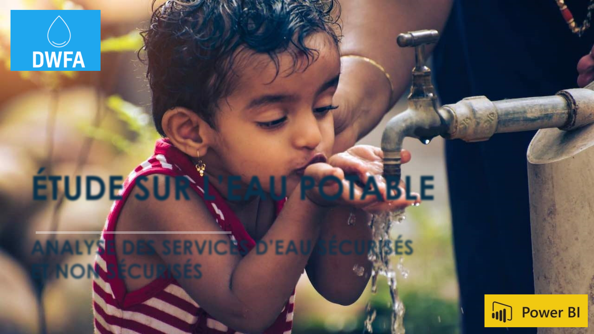
ÉTUDE SUR L’EAU POTABLE
ANALYSE DES SERVICES D’EAU SÉCURISÉS
ET NON SÉCURISÉS
Drinking Water For
All
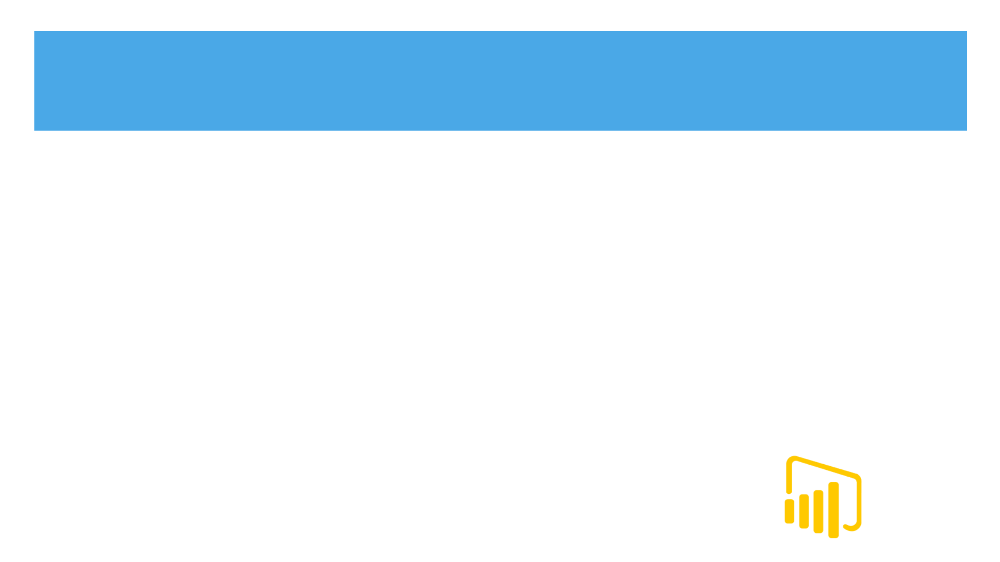
TABLE DES MATIÈRES
PARTIE 1:
Mise en place
- Présentation des vues
- Exemples de Mockup
- Exemples de Blueprint
PARTIE 2:
Traitement des données
- Nettoyage
- Vérifications des types
- Travail sur les colonnes
- Création d’une jointure
- Mise en relation des tables
PARTIE 3:
Exemples de vues
- Cartes
- Taux de mortalité
- Évolution rural et urbaine
- Taux d’accès à l’eau
- Stabilité politique
DEMONSTRATION INTERACTIVE SUR POWER BI
PARTIE 1
Analyse des 3 domaines d’expertise
- Domaine de création
Développer des infrastructures lorsque la population est rural
- Domaine de modernisation
Identifier les pays qui ont un besoin d’améliorer leurs qualité
de services.
- Domaine de consulting
Mise en relation de la stabilité politique sur l’accès à l’eau
Présentation des 3 vues
- Vue mondiale / Vue Continentale / Vue Nationale
Visualisation des données par segment
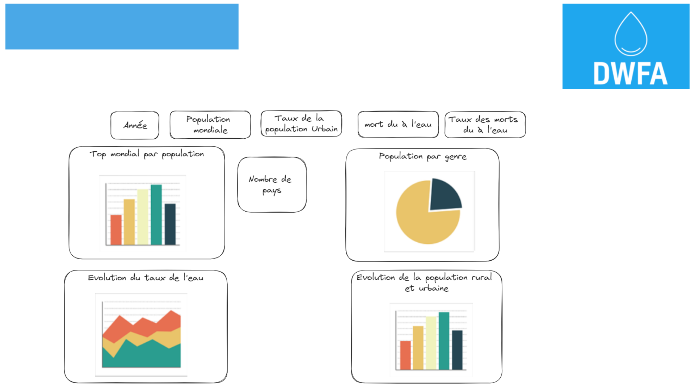
Mockup du dashboard Mondial
PARTIE 1
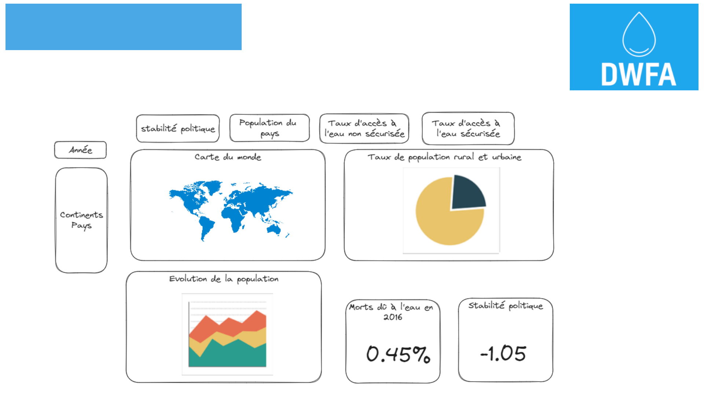
Mockup du dashboard National
PARTIE 1
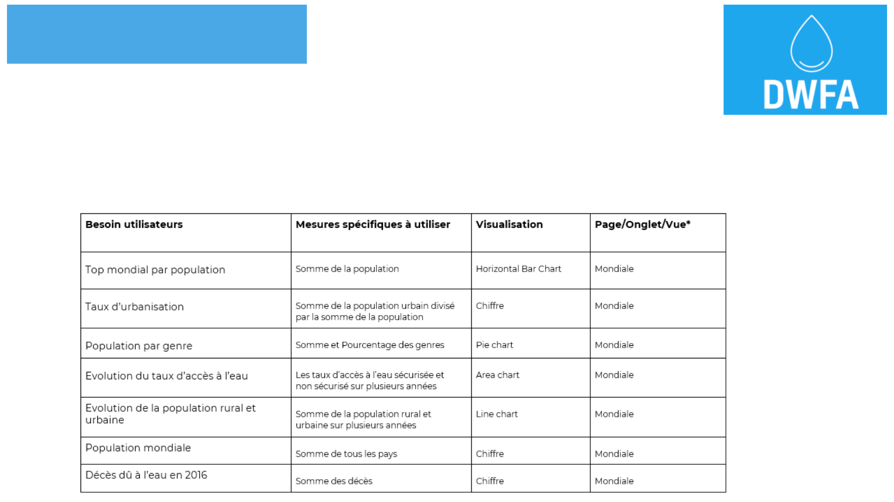
Exemple de blueprint
PARTIE 1
Besoin utilisateurs : Décrit brièvement les interactions des utilisateurs avec les données pour cette exigence
Mesures spécifiques à utiliser : Il s'agit de la liste des paramètres calculés qui seront utilisés pour cette exigence.
Visualisations : Le type de visualisation qui pourrait être utilisé pour cette exigence.
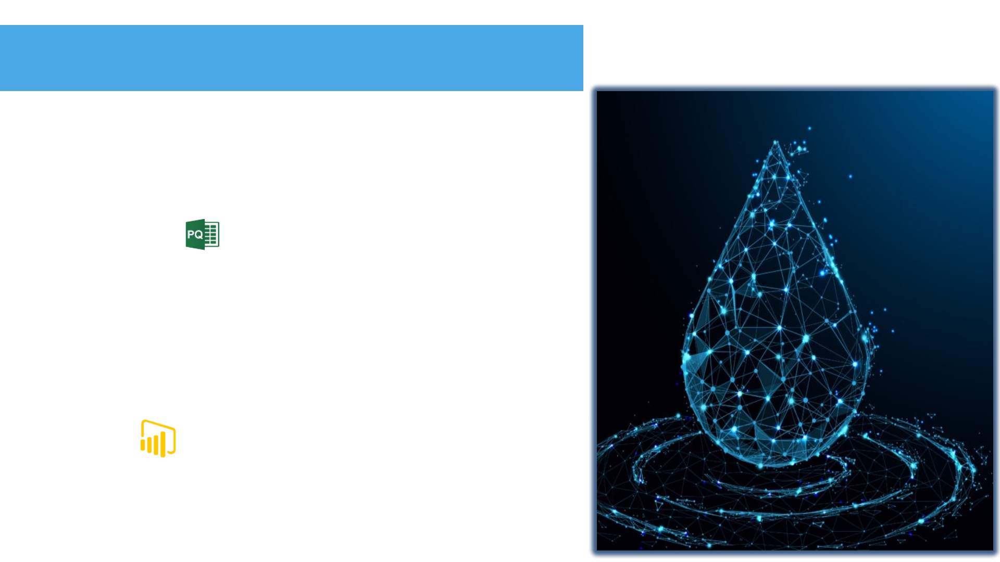
PARTIE 2
Traitement des données
Fichiers fournit par le Data Engineer
Power Query
- Vérification des doublons (nom de pays)
- Vérification des types de variable (texte/décimal)
- Dépivoter et Pivot (colonnes)
- Jointure pour créer une clé unique
Power BI
- Mise en relation des tables
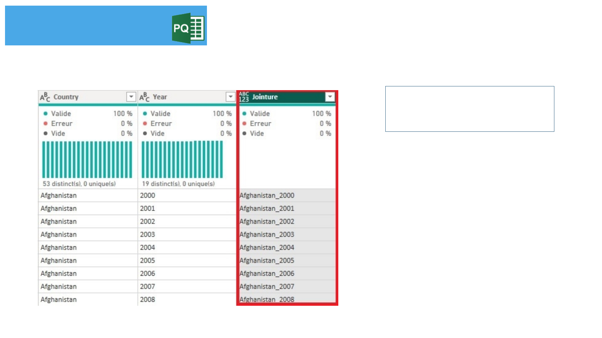
PARTIE 2
Jointure pour créer une clé unique
La jointure va être créer
dans toutes les tables afin de
faire les liens.
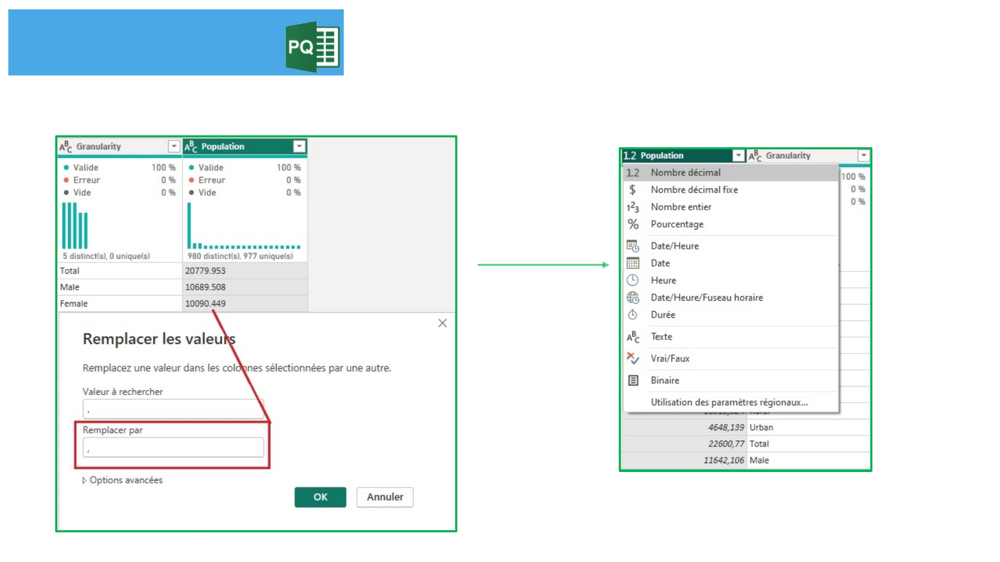
PARTIE 2
Vérifications des types de variables _ décimales
1
2
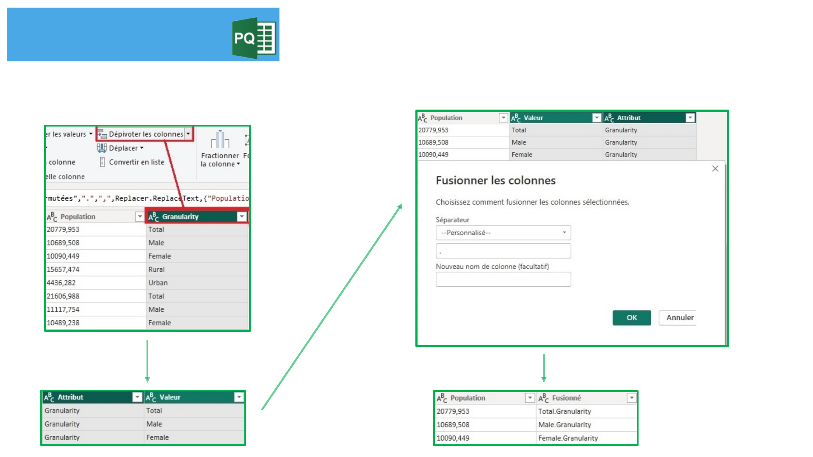
PARTIE 2
Dépivoter une colonne puis la fusionner
1
2
3
4
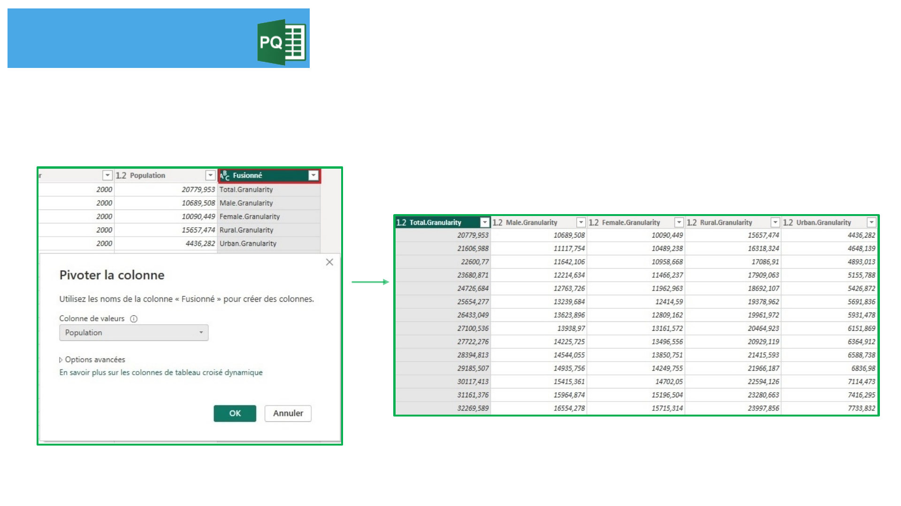
PARTIE 2
Pivoter un colonne
Création de nouvelles colonnes
1
2
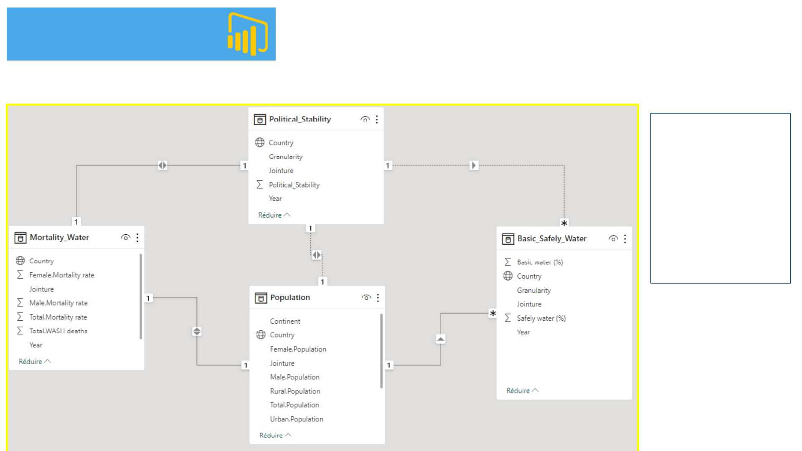
PARTIE 2
Mise en relation des tables dans Power BI
La table
RegionCountry
A été intégré
dans la table
Population car
seul les
continents
apportés un
intérêt.

PARTIE 3
Exemples de graphiques
- Cartes
- Taux de mortalité
- Evolution de la population
- Taux d’accès à l’eau
- Stabilité politique
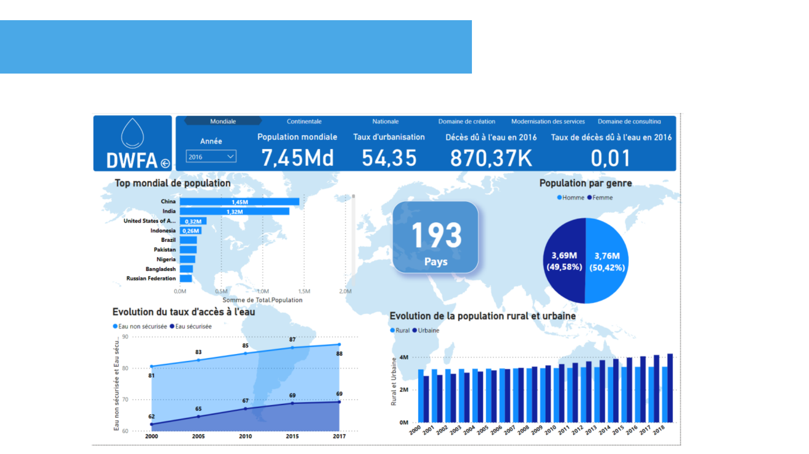
PARTIE 3
Dashboard de la vue Mondiale
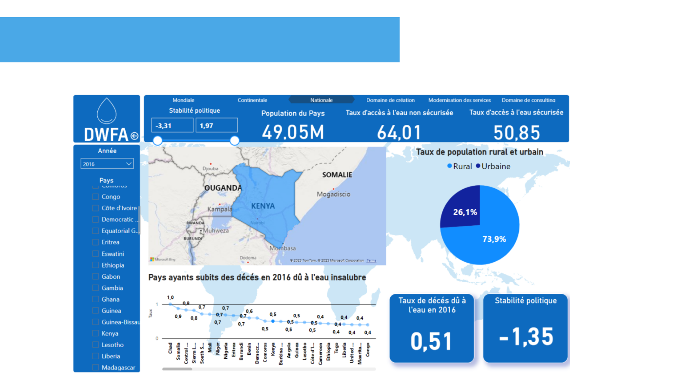
PARTIE 3
Dashboard de la vue Nationale
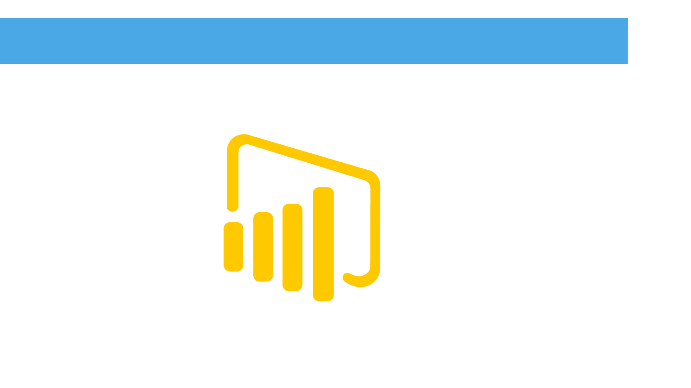
DÉMONSTRATION SUR POWER BI
QUESTIONS
s
RÉPONSES